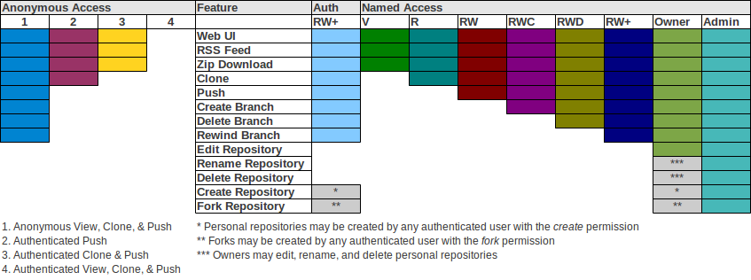

Repositories can be created, edited, renamed, and deleted through the web UI. They may also be created, edited, and deleted from the command-line using real Git or your favorite file manager and text editor.
All repository settings are stored within the repository .git/config file under the gitblit section.
[gitblit]
description = master repository
owner = james
useTickets = false
useDocs = true
showRemoteBranches = false
accessRestriction = clone
isFrozen = false
showReadme = false
federationStrategy = FEDERATE_THIS
isFederated = false
skipSizeCalculation = false
federationSets =
Repository names must be case-insensitive-unique but are CASE-SENSITIVE ON CASE-SENSITIVE FILESYSTEMS. The name must be composed of letters, digits, or / _ - . ~ +
Whitespace is illegal.
Repositories can be grouped within subfolders. e.g. libraries/mycoollib.git and libraries/myotherlib.git
All repositories created with Gitblit are bare and will automatically have .git appended to the name at creation time, if not already specified.
The Repository Owner has the special permission of being able to edit a repository through the web UI. The Repository Owner is not permitted to rename the repository, delete the repository, or reassign ownership to another user.

Since v1.2.0, Gitblit supports more discrete permissions. While Gitblit does not offer a built-in solution for branch-based permissions like Gitolite, it does allow for the following repository access permissions:
These permission codes are combined with the repository path to create a user permission:
RW:mygroup/myrepo.git
NOTE:
The following repository permissions are equivalent:
This is to preserve backwards-compatibility with Gitblit <= 1.1.0 which granted rewind power to all access-permitted users.
Gitblit also supports case-insensitive regex matching for repository permissions. The following permission grants push privileges to all repositories in the mygroup folder.
RW:mygroup/.*
When using regex matching it may also be useful to exclude specific repositories or to exclude regex repository matches. You may specify the X permission for exclusion. The following example grants clone permission to all repositories except the repositories in mygroup. The user/team will have no access whatsoever to these repositories.
X:mygroup/.*
R:.*
The preceding example should suggest that order of permissions is important with regex matching. Here are the rules for determining the permission that is applied to a repository request:
Prior to v1.2.0, Gitblit has two main access permission groupings:
You may optionally enable committer verification which requires that each commit be committed by the authenticated user pushing the commits. i.e. If Bob is pushing the commits, Bob must be the committer of those commits.
How is this enforced?
Bob must properly set his user.name and user.email values for the repository to match his Gitblit user account BEFORE committing to his repository.
[user "bob"]
displayName = Bob Jones
emailAddress = bob@somewhere.com
git config user.name "Bob Jones"
git config user.email bob@somewhere.com
or
git config user.name bob
git config user.email bob@somewhere.com
The committer email address is required to be identical. Display name or username can be used as the committer name.
All checks are case-insensitive.
What about merges?
You can not use fast-forward merges on your client when using committer verification. You must specify --no-ff to ensure that a merge commit is created with your identity as the committer. Only the first/left parent chain is traversed when verifying commits.
Gitblit v1.2.1 introduced an incomplete reflog mechanism which was completed in 1.3.0. All pushes to Gitblit are automatically logged on an orphan branch, refs/meta/gitblit/reflog. If this ref exists, the reflog page link will be displayed on the repository pages.
This reflog is similar to, but not the same as, the normal Git reflog. The Gitblit reflog links Gitblit accounts to ref changes and because it is stored on an orphan branch, the reflog is portable by the federation mechanism or by a normal git clone --mirror command.
Teams have assigned users and assigned repositories. A user can be a member of multiple teams and a repository may belong to multiple teams. This allows the administrator to quickly add a user to a team without having to keep track of all the appropriate repositories.
All users and permissions are stored in the users.conf file. Your file extension must be .conf in order to use this user service.
The users.conf file uses a Git-style configuration format:
[user "admin"]
password = admin
role = "#admin"
role = "#notfederated"
repository = RW+:repo1.git
repository = RW+:repo2.git
[user "hannibal"]
password = bossman
repository = RWD:topsecret.git
repository = RW+:ateam/[A-Za-z0-9-~_\\./]+
[user "faceman"]
password = vanity
[user "murdock"]
password = crazy
[user "babaracus"]
password = grrrr
[team "ateam"]
user = hannibal
user = faceman
user = murdock
user = babaracus
repository = RW:topsecret.git
mailingList = list@ateam.org
postReceiveScript = sendmail
The users.conf file allows flexibility for adding new fields to a UserModel object without imposing the complexity of relying on an embedded SQL database.
Usernames must be unique and are case-insensitive.
Whitespace is illegal.
User passwords are CASE-SENSITIVE and may be plain, md5, or combined-md5 formatted (see gitblit.properties -> realm.passwordStorage).
There are four actual roles in Gitblit:
Personal Repositories and Forks are related but are controlled individually.
A user may be granted the power to create personal repositories by specifying the #create role through the web ui or through the RPC mechanism via the Gitblit Manager. Personal repositories are exactly like common/shared repositories except that the owner has a few additional administrative powers for that repository, like rename and delete.
A user may also be granted the power to fork an existing repository hosted on your Gitblit server to their own personal clone by specifying the #fork role through the web ui or via the Gitblit Manager.
Forks are mostly likely personal repositories or common/shared repositories except for two important differences:
If you really must have an invisible fork, the clone it locally, create a new personal repository for your invisible fork, and push it back to that personal repository.